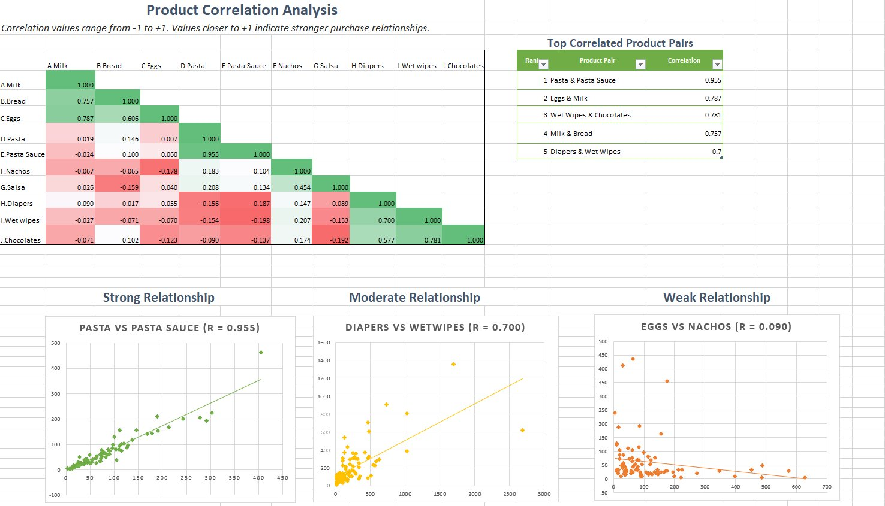
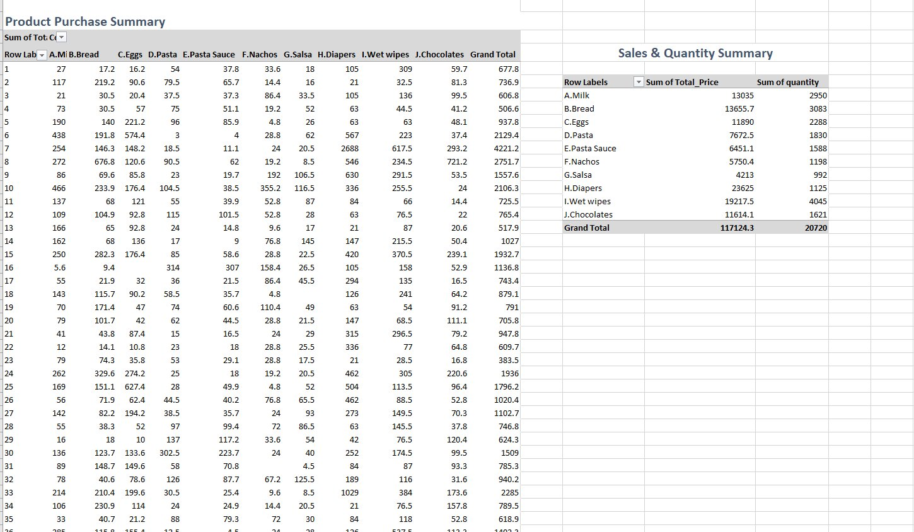

Uncovering hidden product relationships across 8,902 grocery transactions to drive smarter shelf placement and bundling strategy.

Heatmap of all 10×10 product correlations with scatter plots illustrating strong, moderate, and weak relationships.

Pivot table showing total spend and quantity by category. Diapers ($23,625) leads in revenue — a high-volume necessity often bought separately.
Retail stores typically arrange products by category — dairy with dairy, snacks with snacks. But this ignores how customers actually shop. This project analysed purchase correlations across grocery categories including milk, bread, eggs, pasta, and diapers using an Excel correlation matrix to discover which products customers actually buy together.
The goal: move from assumption-based shelf placement to data-driven store layout decisions.
Products placed by category rather than actual customer behaviour, leading to missed cross-selling opportunities.
Without knowing which products are bought together, retailers cannot strategically increase average transaction value.
Bundles created without data insight fail to leverage natural purchase relationships between products.
Cleaned 8,902 transaction records. Aggregated purchase totals per customer using pivot tables to build the correlation input matrix.
Applied Excel's CORREL function across all product pairs to build a 10×10 matrix. Values near +1 = strong co-purchase relationship.
Conditional formatting colour-coded the matrix. Scatter plots with trendlines validated strong, moderate, and weak pair relationships.
Full correlation matrix — green = strong positive, red = negative
| Milk | Bread | Eggs | Pasta | P.Sauce | Nachos | Salsa | Diapers | W.Wipes | Choc | |
|---|---|---|---|---|---|---|---|---|---|---|
| Milk | 1.00 | — | — | — | — | — | — | — | — | — |
| Bread | 0.757 | 1.00 | — | — | — | — | — | — | — | — |
| Eggs | 0.787 | 0.606 | 1.00 | — | — | — | — | — | — | — |
| Pasta | 0.019 | 0.146 | 0.007 | 1.00 | — | — | — | — | — | — |
| P.Sauce | -0.024 | 0.100 | 0.060 | 0.955 | 1.00 | — | — | — | — | — |
| Nachos | -0.067 | -0.065 | -0.178 | 0.183 | 0.104 | 1.00 | — | — | — | — |
| Salsa | 0.026 | -0.159 | 0.040 | 0.208 | 0.134 | 0.454 | 1.00 | — | — | — |
| Diapers | 0.090 | 0.017 | 0.055 | -0.156 | -0.187 | 0.147 | -0.089 | 1.00 | — | — |
| W.Wipes | -0.027 | -0.071 | -0.070 | -0.154 | -0.198 | 0.207 | -0.133 | 0.700 | 1.00 | — |
| Choc | -0.071 | 0.102 | -0.123 | -0.090 | -0.137 | 0.174 | -0.192 | 0.577 | 0.781 | 1.00 |
Move Pasta and Pasta Sauce to adjacent shelving (r = 0.955). Position Eggs alongside Milk in the dairy aisle to capture the 0.787 correlation.
Create "Pasta Night" (Pasta + Sauce) and "Breakfast Essentials" (Milk + Bread + Eggs) bundles to convert correlations into deliberate cross-sells.
Place Chocolates near Diapers and Wet Wipes — the 0.781 Wet Wipes/Chocolates correlation suggests parents treating themselves.
Customers adding Pasta to cart should receive a Pasta Sauce prompt before checkout. Use product pairs to drive personalised offers.
Group strongly correlated products together in picking routes to reduce travel time and improve online order fulfilment efficiency.
Apply this methodology across more categories and longer time periods to uncover seasonal correlations and refine store layouts further.